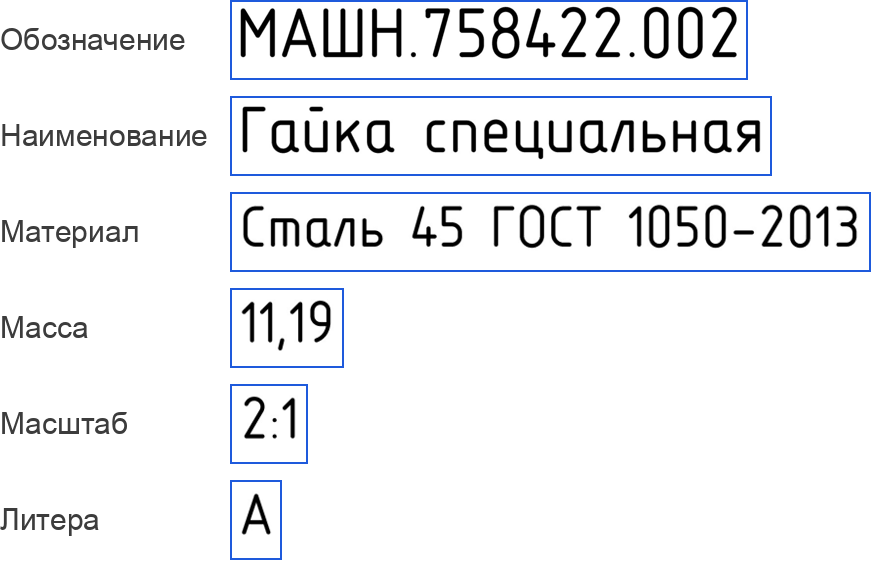
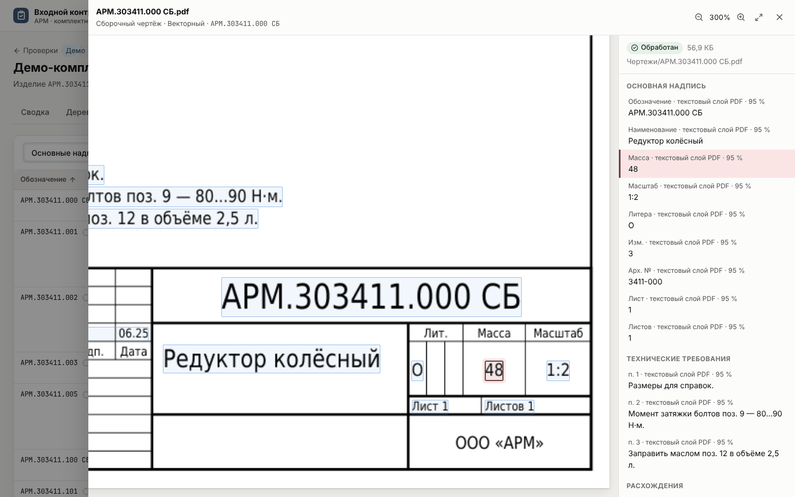
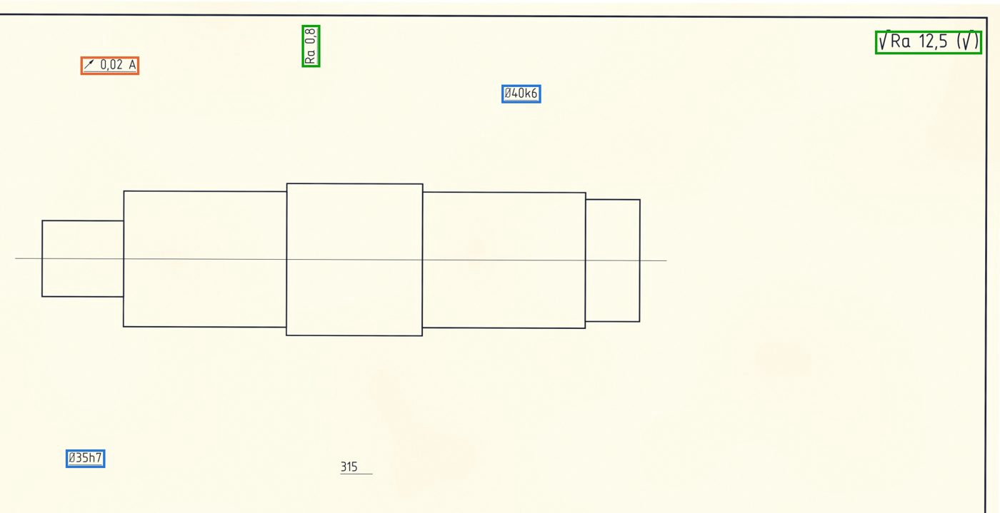
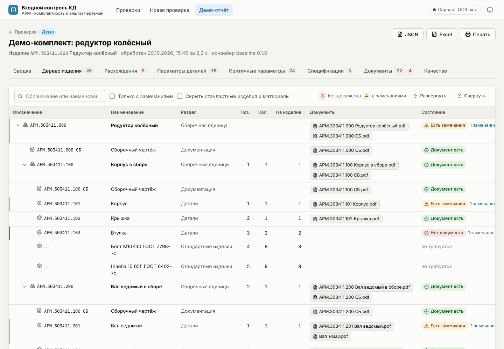

Визуальный отчёт о состоянии проекта на 17.11.2026
Сервис получает комплект конструкторской документации в виде файлов PDF и JPG и выдаёт отчёт по двум блокам: проверке комплектности по дереву изделия и анализу документов, который извлекает поля и параметры технических требований и выделяет критичные. Здесь показаны устройство решения, выбор моделей и итоговое качество. Подробности приведены в полном отчёте.
Как читать графики
- Доля верных, %
- сколько значений из размеченных прочитано верно. Рядом указано «верно N из M».
- Полнота, %
- сколько из заложенных расхождений или размеченных параметров найдено.
- Точность, %
- сколько срабатываний из всех оказались верными. Лишние срабатывания её снижают.
- F1, %
- одно число, объединяющее полноту и точность. Оно высокое, только если высоки обе.
- Время
- секунды или миллисекунды на лист, блок, ячейку или скан, единица указана в заголовке колонки.
Все столбики построены на одной шкале от 0 до 100 %. В полном отчёте те же величины записаны долями единицы: 0,970 означает 97,0 %. Выбранный вариант выделен цветом и отметкой «выбрано».
Как работает решение
Основу решения составляют правила, построенные на стандартах ЕСКД. Геометрия бланка задана стандартом, поэтому система находит основную надпись и таблицу спецификации по линиям бланка, вырезает каждую ячейку и читает её отдельно. Модели подключаются только там, где замер показал выигрыш. Решение о расхождении принимает правило, а модель только читает текст.
- Приём. Тип файла определяется по сигнатуре, проблемные файлы получают статус.
- Листы. Текстовый слой у векторного листа, изображение у растра и скана.
- Области. Основная надпись и спецификация по линиям бланка, каждая ячейка отдельно.
- Чтение. Текстовый слой, распознаватель PP-OCRv5 и модель Qwen3.6-35B-A3B.
- Сборка. Обозначения по грамматике, листы одного документа вместе.
- Комплектность. Дерево изделия и 20 правил расхождений.
- Параметры. Допуски, шероховатость, термообработка и отбор критичных.
- Отчёт. JSON, веб-интерфейс с подсветкой источника, Excel, HTML и CSV.


Выбор моделей
Модели выбирались отдельными замерами, в которых все кандидаты читают одни и те же изображения. Графики идут в том порядке, в котором делался выбор: где искать текст на листе, чем читать ячейку, какую модель подключить, как совместить её с распознавателем и чем читать поле чертежа.
Рис. 3. Поиск областей на листе
Доля верно прочитанных полей основной надписи, %. Шесть синтетических комплектов, изменения включались по одному, ячейки читает Tesseract.
Распознавание листа целиком задачу не решает. Наибольший прирост дали поиск надписи по линиям бланка и чтение каждой ячейки отдельно, поэтому все распознаватели и модели получают вырезанную ячейку, а не лист. Строк спецификаций до чтения по ячейкам верно читалось 4 из 284, после 127.
Источник: ADR-0015
Рис. 4. Распознаватель ячеек
Доля верно прочитанных ячеек основной надписи, %. 506 ячеек на 20 синтетических комплектах.
Выбранный вариант читает почти так же, как лучший, но в 13–19 раз быстрее. На листах заказчика Tesseract не прочёл верно ни одного обозначения основной надписи, выбранный вариант прочёл 49 из 53. Модель cyrillic хуже читает коды обозначений заказчика.
Источник: ADR-0024
Для перечитывания ячеек сравнивались 12 локальных моделей: семь мультимодальных моделей общего назначения и пять моделей распознавания документов. Каждая модель получала изображение тремя способами: целый лист, вырезанный блок технических требований и одну ячейку.
Рис. 5. Мультимодальные модели: целый реальный лист
Доля верно найденных полей основной надписи, %. 50 заполненных полей на 17 реальных сканах.
Модель получает весь лист и должна сама найти поля. Надёжно это делают только модели Qwen. Пять моделей распознавания документов и Tesseract выдают текст листа, а не поля, поэтому здесь не показаны: верное значение есть в их тексте в 13–35 случаях из 50.
Источник: vlm-bench.md
Рис. 6. Мультимодальные модели: вырезка блока технических требований
Доля распознанных параметров, %. 61 параметр в 30 блоках синтетических растров и сканов.
Источник: vlm-bench.md
Рис. 7. Мультимодальные модели: одна ячейка основной надписи
Доля верно прочитанных ячеек, %. 112 ячеек синтетических документов.
На вырезках крупные модели читают почти одинаково и в два с лишним раза больше Tesseract. Qwen3.6-35B-A3B при этом в 4–8 раз быстрее остальных крупных моделей и лучше всех, кроме Qwen3.6-27B, читает целый лист, поэтому выбрана она.
Источник: vlm-bench.md
Рис. 8. Совместная работа распознавателя и модели
Доля верных полей основной надписи, %. 758 полей на 130 синтетических сканах, ячейки читает Tesseract.
Дочитывание пустых ячеек даёт немного, потому что большая часть ошибок распознавателя приходится на заполненные ячейки. Если брать прочтение модели, доля верных полей растёт с 65 до 95–96 %. Gemma 4 31B точнее Qwen3.6-35B-A3B на 0,9 процентного пункта, но работает в 4,6 раза дольше.
Источник: vlm-title-block.md

Рис. 10. Поле чертежа: способы чтения
F1, %. F1 объединяет полноту и точность. 123 параметра на растрах и 207 на сканах шести синтетических комплектов.
PP-OCRv5 по строкам поля станет способом по умолчанию: он поднимает F1 примерно на 10 пунктов без потери точности и времени. Модель по фрагментам находит почти всё, но читает лист в десять раз дольше и не для всех записей указывает точную область. Нужна ли она, решит замер на чертежах заказчика.
Источник: drawing-field.md
Качество выбранной конфигурации
Векторные листы по текстовому слою, растры и сканы по ячейкам с PP-OCRv5, перечитывание моделью Qwen3.6-35B-A3B.
| Задача | Мера | Результат | Данные |
|---|---|---|---|
| Поля основной надписи, вектор | доля верных полей | 100 % | 6 синтетических комплектов |
| Поля основной надписи, растры и сканы, распознаватель | доля верных полей | 90 % на растрах, 86 % на сканах | 6 синтетических комплектов |
| Поля основной надписи сканов, распознаватель и модель | доля верных полей | 95,5 % | 130 синтетических сканов |
| Обозначения строк спецификаций, растры и сканы | доля верных значений | 99 % на растрах, 81 % на сканах | 6 синтетических комплектов |
| Проверка комплектности | полнота и точность | полнота 97,0 %, точность 85,5 % | 20 синтетических комплектов |
| Проверка комплектности | доля верных срабатываний | 11 из 12, 91,7 % | настроечный комплект заказчика |
| Параметры технических требований, вектор | полнота и точность | 100 % и 100 % | 20 синтетических комплектов |
| Параметры технических требований, растры и сканы | полнота и точность | полнота 68 %, точность 92 % | 20 синтетических комплектов |
| Параметры поля чертежа, PP-OCRv5 | F1 | 82,8 % на растрах, 80,1 % на сканах | 6 синтетических комплектов |
Результаты
Рис. 11. Проверка комплектности на синтетических комплектах
Полнота и точность, %. 67 заложенных расхождений в 20 синтетических комплектах.
Распознавание растров и сканов поднимает полноту, модель убирает большую часть лишних срабатываний. Оставшиеся лишние срабатывания вызваны ошибками чтения, а не правилами.
Источник: synth-kits.md

Рис. 13. Проверка комплектности на комплекте заказчика
Точность, %: доля срабатываний, подтверждённых проверкой по листам. 53 растровых листа настроечного комплекта.
Единственное ложное срабатывание в каждой конфигурации вызвано ошибкой чтения. Точность и полнота на реальных данных будут измерены по эталону.
Источник: arm-kits-dev-vlm.md
Рис. 14. Проверка комплектности на учебных комплектах
Полнота, %: доля найденных расхождений из размеченных. Три учебных комплекта из открытых источников.
В первом комплекте не заполнена графа «Обозначение», поэтому дерево изделия не построено.
Источник: gold-kits.md
Рис. 15. Основная надпись по видам входа
Доля верно прочитанных полей основной надписи чертежей, %. Распознаватель без модели, шесть синтетических комплектов.
Векторные документы читаются без ошибок. Стрессовый корпус содержит те же сканы, искажённые независимой библиотекой сильнее, чем генератор относит к читаемым. Модель поднимает долю верных полей сканов до 95,5 % (рис. 8).
Источник: scan-quality.md
Рис. 16. Параметры технических требований на растрах и сканах
Полнота по категориям, %: доля найденных параметров из размеченных. Распознаватель и модель, синтетические комплекты.
Записи технических требований модель читает почти полностью. Допуски размеров и допуски формы стоят на поле чертежа, которое ядро пока читает Tesseract. На векторных чертежах все категории извлекаются полностью.
Источник: synth-kits.md
Что осталось сделать
- Разметить эталон настроечного комплекта заказчика по обезличенным листам и измерить на нём точность и полноту обоих блоков.
- Перевести чтение поля чертежа на PP-OCRv5 по строкам поля и по размеченным чертежам заказчика решить, нужна ли модель по фрагментам листа.
- Откалибровать уверенность, заморозить правила и один раз измерить два отложенных комплекта заказчика и отложенный синтетический корпус.
- Подвести итоговую оценку качества по видам входа и классам качества с 95-процентными интервалами.